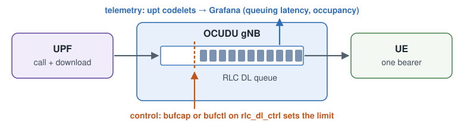
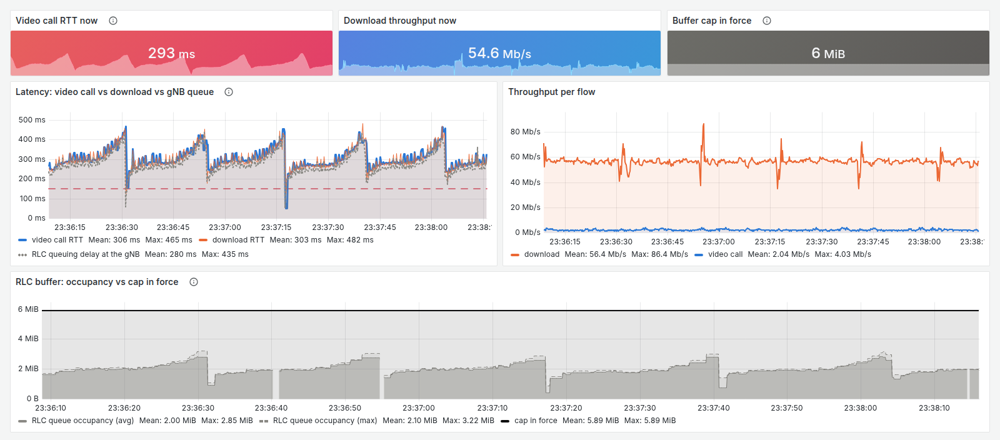
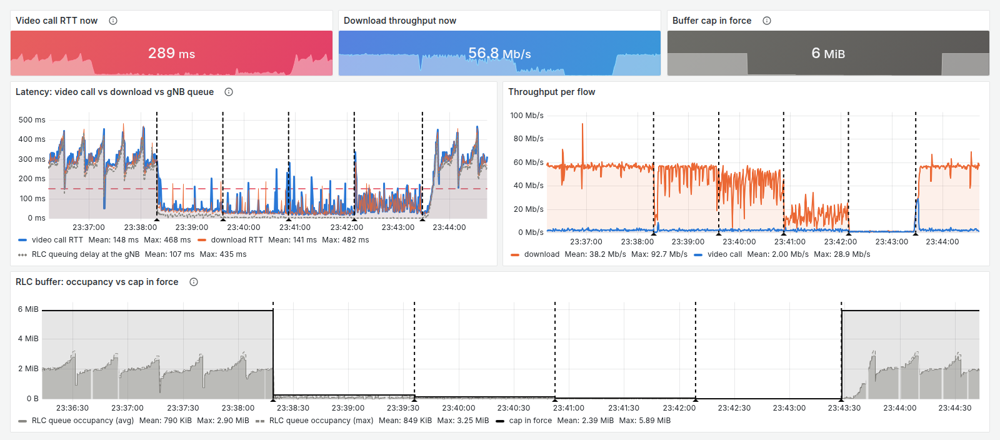
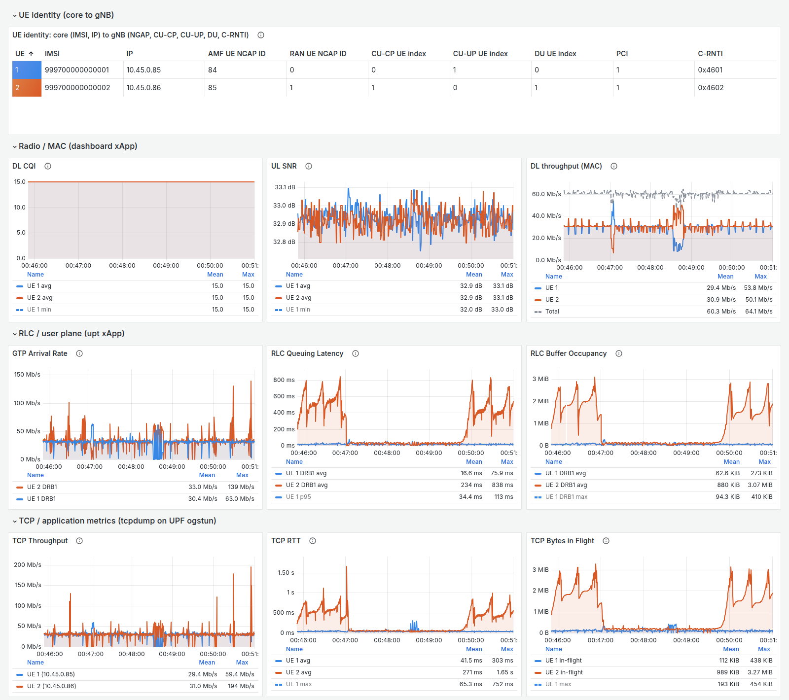

Demo 3: TCP Flow Optimization with Real-Time Buffer Management¶
A bulk download fills the gNB’s downlink RLC queue, and every packet behind it waits: a video call’s RTT
climbs to hundreds of milliseconds while the download gains nothing. A control codelet on the
rlc_dl_ctrl hook sets that queue’s limit at run time, for every UE (Section 2) or per UE (Section 3).
Before you start: Parts 1 and 2 of the tutorial. Part 1 builds the codelets this demo loads:
upt,bufctlandbufcap.Design: EdgeRIC with OCUDU-jbpf: System Design (the hooks and jrtc), and Hooks and Codelets for how a codelet is written.
Runtime: about 25 minutes.


1. Run the System¶
Two UEs share the cell, both on a clean channel. In Section 2, UE 1 carries a video call and a download while UE 2 stays idle; in Section 3, each UE runs one download. Open four terminals on the testbed host.
Terminal 1: RAN¶
cd ~/open-ai-ran-tutorial
export KUBECONFIG="$(k3d kubeconfig write janus-cluster)"
bash scripts/setup_zmq_chan_demo.sh 2 --ran --telemetry
The script stops everything still running, provisions two subscribers in the core, restarts jrtc-0,
starts the broker and the gNB for two UEs, and loads the upt telemetry codelets and the dashboard xApp.
It also copies the bufctl codelet into the gNB container for Section 3. Then it shows the gNB console.
It takes about 2 minutes; start Terminal 2 when the console appears.
== [1/7] stop everything ==
UPF iperf3 stopped
UE iperf3 stopped
UE stopped (live now: 0)
gNB stopped; log truncated (was 0)
broker stopped
ues stopped
broker stopped
== [2/7] core: IMSIs 999700000000001..999700000000002 ==
provisioned (0 added)
== [3/7] fresh jrtc-0 (clean app registry + jbpf IPC peer) ==
jrtc-0 ready
== [4/7] stage broker, UE and gNB configs; netns for 2 UE(s) ==
ue1: pod 10.201.1.1 <-> netns 10.201.1.2
ue2: pod 10.201.2.1 <-> netns 10.201.2.2
== [5/7] broker (2 UE) ==
[broker] C++ single-thread, gNB tx ipc:///tmp/zmq/gnb_tx -> 2 UE(s) -> gNB rx ipc:///tmp/zmq/gnb_rx
[broker] gNB receiver noise -65.0 dBFS
[broker] UE1: rx ipc:///tmp/zmq/ue1_rx tx ipc:///tmp/zmq/ue1_tx (DL +0.0 dB, UL +0.0 dB)
[broker] UE2: rx ipc:///tmp/zmq/ue2_rx tx ipc:///tmp/zmq/ue2_tx (DL +0.0 dB, UL +0.0 dB)
[broker] running (chunk 11520, queue 23040, pacing DL at srate)
== [6/7] gNB (broker mode, dynamic pod-IP NG-U bind) ==
gnb tx_port=ipc:///proc/61581/root/tmp/zmq/gnb_tx
gnb started (bind=10.42.0.92)
gnb procs=1 ngsetup=1
fwd: fwd 127.0.0.1:30450 -> ('srs-gnb-du1-proxy.ran.svc.cluster.local', 30450)
upt codeletset loaded
dashboard xApp loaded
RAN UP. Broker for 2 UE(s); gNB connected to the AMF.
UEs : bash scripts/setup_zmq_chan_demo.sh 2 --ues [--channel FILE | --traces FILE] (another terminal)
console : bash scripts/gnb_console.sh
--== OCUDU gNB (commit ) ==--
Lower PHY in executor sequential baseband mode.
Available radio types: zmq and realtime_loopback.
Cell pci=1, bw=20 MHz, 1T1R, dl_arfcn=632628 (n78), dl_freq=3489.42 MHz, dl_ssb_arfcn=632256, ul_freq=3489.42 MHz
N2: Connection to AMF on open5gs-amf-ngap.open5gs.svc.cluster.local:38412 completed
Remote control server listening on 127.0.0.1:55555
==== gNB started ===
Type <h> to view help
Once the UEs attach (Terminal 2) and the traffic runs (Terminal 3), the console prints one row per UE
every second. UE 1 (C-RNTI 4601) carries the download at about 63 Mbit/s at CQI 15, with 2 to 3 MB
queued for it (dl_bs); UE 2 (4602) stays idle until Section 3:
|--------------------DL---------------------|-------------------------------UL-----------------------------
pci rnti | cqi ri mcs brate ok nok (%) dl_bs | pusch rsrp ri mcs brate ok nok (%) bsr ta phr
1 4601 | 15 1.0 27 63M 1400 0 0% 2.41M | 33.6 -26.7 1 27 932k 100 0 0% 1.45k 260n 38
1 4602 | 15 1.0 0 0 0 0 0% 0 | 33.5 -26.7 1 27 4.86k 1 0 0% 0 260n 38
1 4601 | 15 1.0 27 63M 1400 0 0% 2.55M | 33.6 -26.7 1 27 944k 100 0 0% 1.45k 260n 38
1 4602 | 15 1.0 0 0 0 0 0% 0 | 33.1 -26.7 1 27 4.86k 1 0 0% 0 260n 38
1 4601 | 15 1.0 27 63M 1400 0 0% 2.69M | 33.7 -26.7 1 27 916k 100 0 0% 1.04k 260n 38
1 4602 | 15 1.0 0 0 0 0 0% 0 | 32.7 -26.7 1 27 4.86k 1 0 0% 0 260n 38
1 4601 | 15 1.0 27 63M 1400 0 0% 2.88M | 33.6 -26.7 1 27 926k 100 0 0% 1.04k 260n 38
1 4602 | 15 1.0 0 0 0 0 0% 0 | n/a n/a 1 0 0 0 0 0% 0 260n 38
Ctrl-C leaves the console and the RAN keeps running; bash scripts/gnb_console.sh reopens it.
Terminal 2: UEs¶
cd ~/open-ai-ran-tutorial
export KUBECONFIG="$(k3d kubeconfig write janus-cluster)"
bash scripts/setup_zmq_chan_demo.sh 2 --ues
--ues starts the two UEs against Terminal 1’s broker and gNB and waits until both attach, about 15 s.
Their channels are clean (CQI 15), so the queue, not the radio, decides the latency.
== [1-6/7] the RAN of the last --ran ==
broker pid 61581 for 2 UE(s), UL noise -65; gNB up; telemetry on
== [7/7] 2 UE(s) ==
ue1: IMSI 999700000000001 chan: distance=50,speed=0,min_distance=40,max_distance=60,dl_snr_ref=30,ul_snr_ref=30,seed=1,jitter_db=0,ul_noise_dbfs=-65
ue2: IMSI 999700000000002 chan: distance=50,speed=0,min_distance=40,max_distance=60,dl_snr_ref=30,ul_snr_ref=30,seed=2,jitter_db=0,ul_noise_dbfs=-65
tune: gnb + broker threads SCHED_FIFO; gnb, broker, UEs on CPUs 16-31,48-63
################ verify ################
ue1 ip=10.45.0.85 t 6.0 s, d 50.0 m, DL SNR 30.0 dB (ref -27.4 dBFS), UL SNR 30.0 dB, UL gain 8.4 dB
ue2 ip=10.45.0.86 t 6.0 s, d 50.0 m, DL SNR 30.0 dB (ref -27.4 dBFS), UL SNR 30.0 dB, UL gain 8.4 dB
UE 1 IMSI 999700000000001 IP 10.45.0.85 RAN_UE_NGAP_ID 0 AMF_UE_NGAP_ID 84
UE 2 IMSI 999700000000002 IP 10.45.0.86 RAN_UE_NGAP_ID 1 AMF_UE_NGAP_ID 85
-> 2 core events to the dashboard xApps (jrtc-0, udp 127.0.0.1:30502 dashboard, :30503 dashboard-realtime-scheduling)
SETUP DONE. 2 UE(s) attached.
traffic : bash scripts/traffic_nue.sh start (DL iperf3, UPF -> every UE)
rates : bash scripts/traffic_nue.sh status (per-UE + total, measured at the UE)
channel : kubectl exec -n ran srs-gnb-du1-0 -c durue1 -- grep 'ZMQ chan' /tmp/ues/ue1.log | tail
stop : bash scripts/traffic_nue.sh stop && bash scripts/stop_demo.sh
Terminal 3: Traffic¶
cd ~/open-ai-ran-tutorial
export KUBECONFIG="$(k3d kubeconfig write janus-cluster)"
bash buffer-control-experiments/traffic_A.sh start
video: cubic paced 2M -> 10.45.0.85:5202
bulk: cubic unlimited -> 10.45.0.85:5201
flowmon: [flowmon] {'5201': 'bulk', '5202': 'video'} -> http://localhost:30491/write
Both flows run downlink from the UPF to UE 1, on the same bearer: a call paced at 2 Mbit/s and an
unlimited CUBIC download. flowmon reads each flow’s RTT and throughput from the sender’s TCP stack on
the UPF and writes them for Grafana. Within about 20 s the download fills the queue and the call’s RTT
passes 200 ms. Other mixes:
bash buffer-control-experiments/traffic_A.sh start --cc bbr # a BBR download instead
bash buffer-control-experiments/traffic_A.sh start --video-rate 4M
bash buffer-control-experiments/traffic_A.sh video-only # or bulk-only
Terminal 4: Grafana¶
cd ~/open-ai-ran-tutorial
export KUBECONFIG="$(k3d kubeconfig write janus-cluster)"
python3 buffer-control-experiments/make_dashboard.py # once per Grafana install
bash scripts/tcp_probe.sh
{'folderUid': '', 'id': 2, 'slug': 'demo-33a-rlc-buffer-cap', 'status': 'success', 'uid': 'demo3-bufcap', 'url': '/d/demo3-bufcap/demo-33a-rlc-buffer-cap', 'version': 1}
-> http://localhost:30490/d/demo3-bufcap
Dashboard: http://localhost:30490/d/upt-userplane (Ctrl-C stops the TCP row)
[tcp_probe] UE map: {'10.45.0.85': 1, '10.45.0.86': 2}
[tcp_probe] writing to http://localhost:30491/write
[tcp_probe] capturing on open5gs-upf-59bcf7bbb8-v7djt:ogstun
[tcp_probe] pcap linktype=101 l2_offset=0
make_dashboard.py creates the experiment dashboard for Section 2. tcp_probe.sh captures on the UPF
and feeds the TCP row of the user-plane dashboard for Section 3; it runs in the foreground until Ctrl-C.
Open http://localhost:30490/d/demo3-bufcap. From a laptop, forward the port first:
ssh -N -L 30490:localhost:30490 <user>@<testbed-host>.


The experiment dashboard before any cap.¶
Top row: the call’s RTT now, the download’s throughput and the cap in force (none yet: the gNB’s configured queue, 6 MiB).
Latency: the call’s RTT (blue) and the download’s (orange) average about 300 ms, in a CUBIC sawtooth that peaks near 480 ms. The gNB’s queuing delay (dotted) tracks them: the queue is the RTT.
Throughput and RLC buffer: the download takes about 56 Mbit/s and keeps about 2 MB queued; the call holds its 2 Mbit/s. The black line is the cap in force: with no cap, the gNB’s configured queue, about 6 MB.
2. Cell-Wide Buffer Cap¶
Terminal 5: Buffer Cap¶
Open a fifth terminal. The bufcap codelet holds one limit on every UE’s queue. Step it down, about a
minute per size, then remove it:
cd ~/open-ai-ran-tutorial
export KUBECONFIG="$(k3d kubeconfig write janus-cluster)"
bash buffer-control-experiments/bufcap.sh load 256k
bash buffer-control-experiments/bufcap.sh load 128k
bash buffer-control-experiments/bufcap.sh load 64k
bash buffer-control-experiments/bufcap.sh load 16k
bash buffer-control-experiments/bufcap.sh status
bash buffer-control-experiments/bufcap.sh off
load swaps out the cap in force, so you can move between sizes freely, and builds a size on its first
use. off loads bufcap_off until the next downlink packet has restored the configured limit, then
unloads it:
loaded bufcap_256k
--------- bufcap.cpp -> bufcap_128k.o (CAP_BYTES=131072) ---------
verifier: OK
built bufcap_128k (131072 bytes)
unloaded bufcap_256k
loaded bufcap_128k
unloaded bufcap_128k
loaded bufcap_64k
unloaded bufcap_64k
loaded bufcap_16k
bufcap: loads=4 removes=3 -> ATTACHED (16k)
bufctl: loads=0 removes=0
unloaded bufcap_16k
loaded bufcap_off
configured buffer restored; bufcap unloaded
Every cap change draws a dashed line on the dashboard. Then print the run, one row per setting (the first 10 s after each change are skipped):
python3 buffer-control-experiments/snapshot.py --minutes 8.5
time (s) cap video RTT p50/p95 video Mb/s bulk RTT p50/p95 bulk Mb/s
0-125 no cap 295.0/403.9 2.05 285.5/414.1 56.3
125-202 256k 46.7/81.4 1.95 36.2/51.3 52.12
202-279 128k 31.3/105.2 2.04 24.9/86.7 42.45
279-355 64k 27.8/109.4 2.0 26.6/91.1 14.93
355-434 16k 60.7/135.1 0.86 56.7/139.3 0.91
434-510 no cap 296.9/414.8 1.97 290.9/400.0 56.05
plot: ~/open-ai-ran-tutorial/buffer-control-experiments/results/session_20261029_234443/timeline.png


Section 2: no cap, then 256k, 128k, 64k and 16k, then no cap again.¶
Latency: each dashed line is a cap change. At 256k the call’s median RTT drops from 295 ms to 47 ms, and at 128k and 64k to about 30.
Throughput: the download keeps 52 Mbit/s at 256k, then loses rate as the cap drops below the bandwidth-delay product: 42 at 128k and 15 at 64k. At 16k both flows collapse to under 1 Mbit/s. The call holds its 2 Mbit/s until 16k.
RLC buffer: about 2 MB queued with no cap, almost nothing under any cap. The black line steps down with each cap and returns to the configured 6 MB after
off.
Latency collapses long before throughput does: at 256k the call’s median RTT is about a sixth of what it was, and the download keeps 93 % of its rate. Smaller caps buy little more latency and cost the download most of its rate.
3. Per-UE Limits, BBR vs CUBIC¶
One cap for the whole cell treats every flow the same. Now each UE runs one download, BBR on UE 1 and
CUBIC on UE 2, and you set each UE’s limit live from the bufctl CLI.
Terminal 3: Traffic¶
Switch the traffic. UE 1’s flow needs BBR in the host kernel, which the k3d nodes share:
bash buffer-control-experiments/traffic_A.sh stop
sysctl net.ipv4.tcp_available_congestion_control # bbr should be listed; if not: sudo modprobe tcp_bbr
bash scripts/traffic_2ue.sh start # UE 1 = BBR, UE 2 = CUBIC
bash scripts/traffic_2ue.sh status
traffic stopped
flowmon stopped
net.ipv4.tcp_available_congestion_control = reno cubic bbr
ue1: DL started UPF -> 10.45.0.85:5201 (cc=bbr rate=unlimited 3600s)
ue2: DL started UPF -> 10.45.0.86:5202 (cc=cubic rate=unlimited 3600s)
Per-UE buffer control: python3 jrtc-apps/jrtc_apps/bufctl/bufctl_cli.py
ue1 ip=10.45.0.85 last=29.1 Mbits/sec
ue2 ip=10.45.0.86 last=29.4 Mbits/sec
live iperf3 -- ue: 2 upf: 2
Both UEs get the same rate, 32 Mbit/s at the MAC, but Terminal 1’s console shows the difference between the two transports: the CUBIC UE (C-RNTI 4602) keeps about 2 MB queued, while the BBR UE (4601) keeps about 0.1 MB:
|--------------------DL---------------------|-------------------------------UL-----------------------------
pci rnti | cqi ri mcs brate ok nok (%) dl_bs | pusch rsrp ri mcs brate ok nok (%) bsr ta phr
1 4601 | 15 1.0 27 32M 700 0 0% 66.3k | 33.4 -26.7 1 27 488k 69 0 0% 74 260n 38
1 4602 | 15 1.0 27 32M 700 0 0% 1.78M | 33.4 -26.7 1 27 462k 67 0 0% 535 260n 38
1 4601 | 15 1.0 27 32M 700 0 0% 111k | 33.4 -26.7 1 27 493k 70 0 0% 0 260n 38
1 4602 | 15 1.0 27 32M 700 0 0% 1.91M | 33.4 -26.7 1 27 465k 67 0 0% 0 260n 38
1 4601 | 15 1.0 27 32M 700 0 0% 104k | 33.5 -26.7 1 27 514k 72 0 0% 0 260n 38
1 4602 | 15 1.0 27 32M 700 0 0% 1.9M | 33.3 -26.7 1 27 457k 66 0 0% 1.04k 260n 38
Other mixes:
bash scripts/traffic_2ue.sh start --cc cubic # both CUBIC, as a baseline
bash scripts/traffic_2ue.sh start --cc1 cubic --cc2 bbr # swap them
bash scripts/traffic_2ue.sh start --ue 1 --rate 2M # UE 1 paced at 2 Mbit/s, like a call
Open the user-plane dashboard, http://localhost:30490/d/upt-userplane, and set bearer to DRB1.
Terminal 6: bufctl CLI¶
Open a sixth terminal:
cd ~/open-ai-ran-tutorial
export KUBECONFIG="$(k3d kubeconfig write janus-cluster)"
python3 jrtc-apps/jrtc_apps/bufctl/bufctl_cli.py
The CLI loads the bufctl codelet and its xApp when it starts and unloads them on quit. bufctl and
bufcap share the rlc_dl_ctrl hook, so the bufcap.sh off that ended Section 2 must have run. Its
commands:
scan discover the live bearers
list UE, DRB, current and configured limits, last event
set 0 1 byte 200000 cap UE 0's DRB1 at 200 kB
set 0 1 sdu 512 or limit it by SDU count
reset 0 1 back to the configured size
quit unload the codelet and the xApp
bufctl numbers UEs by the gNB’s DU UE index, which follows attach order. In this run UE 1 attached
first, so index 0 is UE 1 (BBR) and index 1 is UE 2 (CUBIC); the identity table at the top of the
user-plane dashboard lists each UE’s DU UE index. Cap the CUBIC UE first, with set 1 1 byte 200000:
==============================================================================
RLC DL buffer-size control
The codelet is loaded now and unloaded on quit, because while it is
loaded the control hook runs on every downlink packet.
==============================================================================
jrtc-ctl load: ok
UE DRB current configured last event ranges
----------------------------------------------------------------------------
0 1 6172672B/16384SDU 6172672B/16384SDU get sdu 1..16384, byte 9007..6172672
1 1 6172672B/16384SDU 6172672B/16384SDU changed sdu 1..16384, byte 9007..6172672
(snapshot 1.2s old; reports=3, sent=1, failed=0)
type 'help' for commands
bufctl> scan
asked 8 (UE, DRB) pairs to report
UE DRB current configured last event ranges
----------------------------------------------------------------------------
0 1 6172672B/16384SDU 6172672B/16384SDU get sdu 1..16384, byte 9007..6172672
1 1 6172672B/16384SDU 6172672B/16384SDU get sdu 1..16384, byte 9007..6172672
(snapshot 1.6s old; reports=5, sent=9, failed=0)
bufctl> set 1 1 byte 200000
SET sent: UE 1 DRB 1 byte=200000 (applies on its next DL packet)
UE DRB current configured last event ranges
----------------------------------------------------------------------------
0 1 6172672B/16384SDU 6172672B/16384SDU get sdu 1..16384, byte 9007..6172672
1 1 200000B/16384SDU 6172672B/16384SDU changed sdu 1..16384, byte 9007..6172672 <- changed
(snapshot 1.1s old; reports=6, sent=10, failed=0)
The configured queue is 6,172,672 bytes (about 6 MB), and the gNB accepts any byte limit from one maximum-size PDCP PDU (9,007 bytes) up to it. About a minute later, cap the BBR UE with the same limit, then restore both and quit:
bufctl> set 0 1 byte 200000
SET sent: UE 0 DRB 1 byte=200000 (applies on its next DL packet)
UE DRB current configured last event ranges
----------------------------------------------------------------------------
0 1 200000B/16384SDU 6172672B/16384SDU changed sdu 1..16384, byte 9007..6172672 <- changed
1 1 200000B/16384SDU 6172672B/16384SDU changed sdu 1..16384, byte 9007..6172672 <- changed
(snapshot 1.2s old; reports=7, sent=11, failed=0)
bufctl> reset 0 1
RESET sent for UE 0 DRB 1 (applies on its next DL packet)
...
bufctl> reset 1 1
RESET sent for UE 1 DRB 1 (applies on its next DL packet)
...
bufctl> quit
bye
unloading bufctl (applied limits stay in force)
jrtc-ctl unload: ok
The gNB keeps a limit after the codelet unloads, so reset each bearer before quit.


Section 3: UE 2 (CUBIC, orange) and UE 1 (BBR, blue). UE 2 capped at 00:47:00, UE 1 at 00:48:18, both reset at 00:49:36.¶
No cap: UE 2 (CUBIC) keeps about 2 MB queued: 525 ms of RLC queuing delay and a TCP RTT of 560 ms. UE 1 (BBR) keeps about 70 kB: 20 ms and 42 ms. Both get about 29 Mbit/s.
UE 2 capped (
set 1 1 byte 200000): its queue falls to about 120 kB, its queuing delay to 31 ms and its RTT to 55 ms, at the same 29 Mbit/s. UE 1 does not change.Both capped: UE 1 already kept less than 200 kB queued, so the cap changes little. Its throughput dips to about 13 Mbit/s for 15 s while BBR adapts, and UE 2 takes the spare capacity.
Reset: within about 25 s UE 2’s queue refills, and its queuing delay is back at 350 to 650 ms.
One limit does not suit every user: 200 kB removes half a second of delay from the CUBIC flow at no cost in throughput, and buys the BBR flow nothing, since it never queued that much.
4. Stop¶
# Terminal 6: reset 0 1, reset 1 1, quit. Terminal 4: Ctrl-C.
bash scripts/traffic_2ue.sh stop
bash scripts/stop_demo.sh
stopped. live iperf3 -- ue container: 0 upf: 0
== [1/5] unload bufctl if attached ==
bufctl was not attached
== [2/5] stop traffic ==
UPF iperf3 stopped
UE iperf3 stopped
tcp_probe not running
== [3/5] stop the UE ==
UE stopped (live now: 0)
== [4/5] stop the gNB and reclaim the log ==
gNB stopped; log truncated (was 988K)
== [5/5] stop the broker (multi-UE runs: Python or C++) ==
broker stopped
STOPPED. Bring it back with: bash scripts/setup_zmq_chan_demo.sh N [--telemetry]
Then press Ctrl-C in Terminal 1.
Reference¶
Buffer caps: bufcap¶
bufcap.sh loads codelets/bufcap/bufcap.cpp on the rlc_dl_ctrl control hook. The codelet holds one
byte limit on every data bearer of every UE. Each size is its own object, built from the same source.
Command |
Effect |
|---|---|
|
build caps, by default |
|
load a cap in place of the current one: |
|
the cap in force |
|
restore the configured limits, then unload; needs downlink traffic |
|
unload only, so the last cap stays in force |
Per-bearer limits: bufctl¶
bufctl_cli.py loads codelets/bufctl/rlc_ctrl.cpp on the same hook, together with the bufctl xApp.
The CLI hands each command to the xApp, the xApp passes it to the codelet on a control-input channel,
and the codelet applies it on that bearer’s next downlink SDU. The gNB clamps every byte limit to the
range from one maximum-size PDCP PDU (9,007 bytes) to the configured queue. The hook’s API is in
docs/rlc-buffer-control-hook.md.
Traffic¶
Command |
Flows |
|---|---|
|
on UE 1: a 2 Mbit/s “video call” (port 5202) and a CUBIC download (port 5201) |
|
the same with another congestion control, call rate or UE |
|
one of the two flows |
|
one download per UE: BBR on UE 1, CUBIC on UE 2 |
|
other mixes |
traffic_A.sh also starts flowmon, which reads each flow’s RTT and throughput from the sender’s TCP
stack on the UPF.
Telemetry¶
The dashboard’s RLC panels come from the upt codelets that --telemetry loads: queuing latency from
rlc_dl_sdu_send_started, and buffer occupancy from rlc_dl_new_sdu and rlc_dl_sdu_send_completed.
Each codelet adds up its packets in 134 ms buckets, per UE and bearer, and sends one message per bucket.
Hooks and Codelets shows how to write a codelet like these.
Notes¶
The gNB keeps the last limit after a control codelet unloads.
bufcap.sh offrestores the configured limits; withbufctl,reseteach bearer beforequit.bufcapandbufctlsharerlc_dl_ctrl, and a control hook takes one codelet at a time. Runbufcap.sh offbefore you startbufctl_cli.py.A bearer reports nothing until it carries downlink traffic, so start traffic before
scan.bufctl_cli.pytalks to its xApp through files underjrtc-apps/jrtc_apps/bufctl/, so run it from the clone that the RAN pods mount.
Troubleshooting¶
Symptom |
Fix |
|---|---|
|
restart Terminal 1, then Terminal 2 |
attached, but no data |
re-point the SMF at the UPF (Part 2) |
|
a stale |
Grafana panels empty with traffic flowing |
|
panels freeze mid-run |
|
|
check that the xApp is loaded ( |